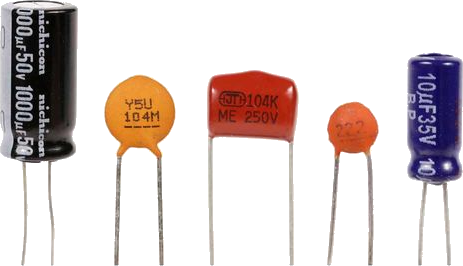
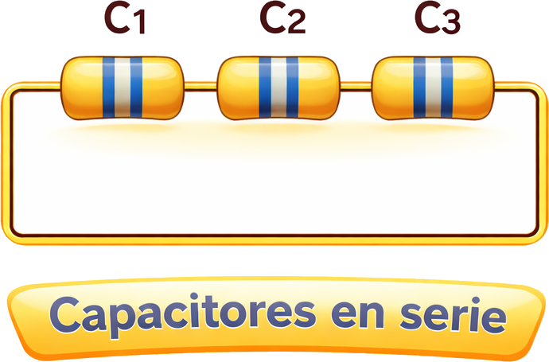
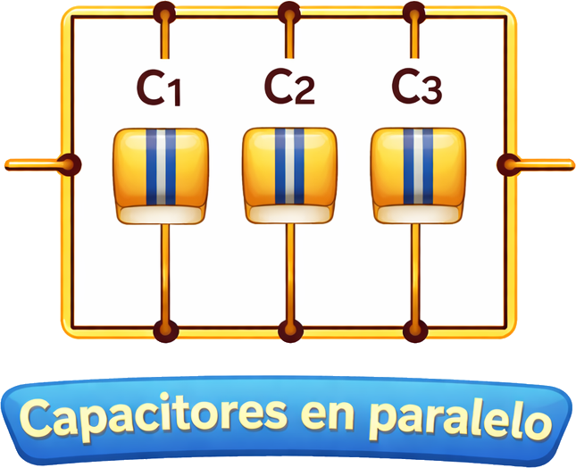

<div class="card-mini" onclick="abrirHerramienta('herram-capacitores')">
    <div class="card-icon-container">
        
    </div>
    <p>Capacitores</p>
</div>

<section id="herram-capacitores" class="ventana-capa" style="display:none;">
    <button class="btn-atras" onclick="cerrarHerramienta('herram-capacitores')">← Volver a Conexiones</button>
    <div class="contenido-herramienta">
        <h3>Capacitores / Condensadores</h3>
        <div class="contenedor-esquemas">
            
            
        </div>
        

[Image of capacitors in series and parallel circuits]

        <div class="selector-modo">
            <label>Tipo de Conexión:</label>
            <select id="modo-calculo-cap" onchange="cambiarEsquemaCapacitor()">
                <option value="serie">Serie</option>
                <option value="paralelo">Paralelo</option>
            </select>
        </div>
        <div id="lista-valores-cap"></div>
        <button class="btn-agregar" onclick="agregarFilaCapacitor()">+ Añadir Valor</button>
        <div class="seccion-resultado">
            <button class="btn-calcular" onclick="calcularCapacitores()">CALCULAR TOTAL</button>
            <div id="resultado-final-cap" class="caja-resultado">Total: --</div>
            <select id="unidad-resultado-cap" onchange="calcularCapacitores()">
                <option value="0.000000000001">pF (picoFaradios)</option>
                <option value="0.000000001">nF (nanoFaradios)</option>
                <option value="0.000001">µF (microFaradios)</option>
                <option value="1">F (Faradios)</option>
            </select>
        </div>
    </div>
</section>
